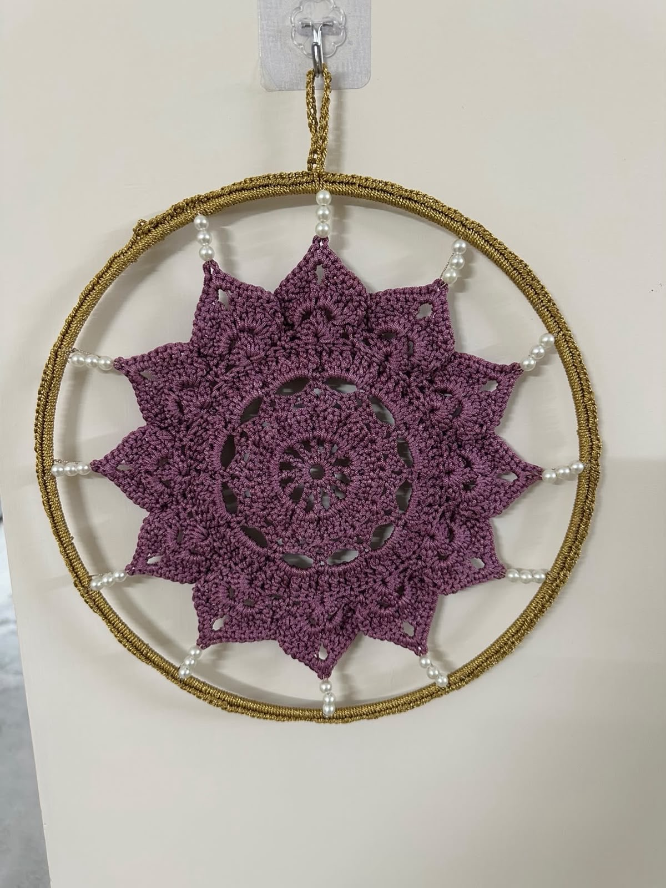

MADE WITH
INTENTION
✳
INTENTION
✳
A NOTE FROM KARISHMAA
Handcrafted with love.
Infused with Reiki.
I’m Karishmaa Singh — a tarot reader, numerologist and healer. I bring my Reiki practice and heartfelt intention to each crochet creation, bringing together the beauty of handmade craft with a wish for positivity, balance and harmony.
Choose a piece for your home, a thoughtful gift, or a gentle reminder to pause and reconnect with yourself. Each one is made with care and carries its own handmade character.
With love, Karishmaa ♡
Follow along on Instagram ↗